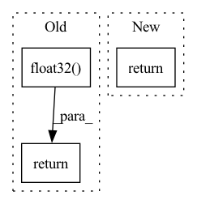

Pattern ID :33089
Before Change
// transform to positive energy domain + smallest float 32 ofsett to ensure no -inf in logcosh
// prevents overflow and underflow error
softplus = torch.nn.Softplus(beta = 0.05, threshold=20)
return softplus(x)+np.nextafter(np.float32(0), np.float32( 1) )
After Change
def _forward(self, x):
// Transform to positive energy domain to ensure no `-inf` in `log10`
// transform, thereby preventing overflow and underflow error.
return torch.nn.functional.softplus(x, beta=0.05) + eps_like(x)
In pattern: SUPERPATTERN
Frequency: 4
Non-data size: 3
Instances Fragment ID: 95690180
Project Name: icecube/graphnet
Commit Name: a99e1b457c2ccb6b2696303573b20870e50875a7
Time: 2022-11-13
Author: 111734311+Aske-Rosted@users.noreply.github.com
File Name: src/graphnet/models/task/reconstruction.py
M Class Name: EnergyReconstructionWithoutPowerTransform
N Class Name: EnergyReconstructionWithoutPowerTransform
M Method Name: _forward(2)
N Method Name: _forward(2)
M Parent Class: Task
N Parent Class: Task
M File Name: src/graphnet/models/task/reconstruction.py
N File Name: src/graphnet/models/task/reconstruction.py
M Start Line: 103
M End Line: 104
N Start Line: 103
N End Line: 103
Before Change
// print(f"DEBUG WARNING!!!: new_act:{new_act}")
new_obs = (self.data[2][idx_now], imgs[1:], new_act) if self.act_in_obs else (self.data[2][idx_now], imgs[1:])
// print(f"DEBUG: new_obs:{new_obs}")
done = np.float32( self.data[4][idx_now])
return last_obs, new_act, rew, new_obs, done
def load_imgs(self, item):
res = []After Change
// done = np.float32(self.data[4][idx_now])
done = self.data[4][idx_now]
info = self.data[6][idx_now]
return last_obs, new_act, rew, new_obs, done, info
def load_imgs(self, item):
res = [] Fragment ID: 95690178
Project Name: trackmania-rl/tmrl
Commit Name: 8da3e086b27e06c9c88111ff34f5274e8f598cae
Time: 2020-10-29
Author: yann.bouteiller@hotmail.fr
File Name: agents-rt/agents/custom/custom_memories.py
M Class Name: MemoryTMNFLidar
N Class Name: MemoryTMNFLidar
M Method Name: get_transition(2)
N Method Name: get_transition(2)
M Parent Class: MemoryTMNF
N Parent Class: MemoryTMNF
M File Name: agents-rt/agents/custom/custom_memories.py
N File Name: agents-rt/agents/custom/custom_memories.py
M Start Line: 81
M End Line: 90
N Start Line: 78
N End Line: 95
Before Change
kp_img = np.apply_along_axis(_make_keypoint, 1, kp_img)
kp_map = np.apply_along_axis(_make_keypoint, 1, kp_map)
src_corners = np.float32( [[0, 0], [0, h - 1], [w - 1, h - 1], [w - 1, 0]]) .reshape(-1, 1, 2)
dst_corners = cv2.perspectiveTransform(src_corners, h_mat)
map_with_fov = cv2.polylines(map_arr, [np.int32(dst_corners)], True, 255, 3, cv2.LINE_AA)
draw_params = dict(matchColor=(0, 255, 0), singlePointColor=None, matchesMask=None, flags=2)
out = cv2.drawMatches(img_arr, kp_img, map_with_fov, kp_map, matches, None, **draw_params)
cv2.imshow("Matches and FoV", out)
cv2.waitKey(1)
return dst_corners
def setup_sys_path():After Change
cv2.imshow(figure_name, out)
cv2.waitKey(1)
return out
def get_fov(img_arr, h_mat): Fragment ID: 95690179
Project Name: hmakelin/gisnav
Commit Name: 1d36e0563dcee0969ef55f6f6c4e8175e5acfa72
Time: 2021-11-05
Author: hmakelin@protonmail.com
File Name: wms_map_matching/util.py
M Class Name: AnonimousClass
N Class Name: AnonimousClass
M Method Name: visualize_homography(6)
N Method Name: visualize_homography(5)
M Parent Class:
N Parent Class:
M File Name: wms_map_matching/util.py
N File Name: wms_map_matching/util.py
M Start Line: 97
M End Line: 121
N Start Line: 97
N End Line: 114